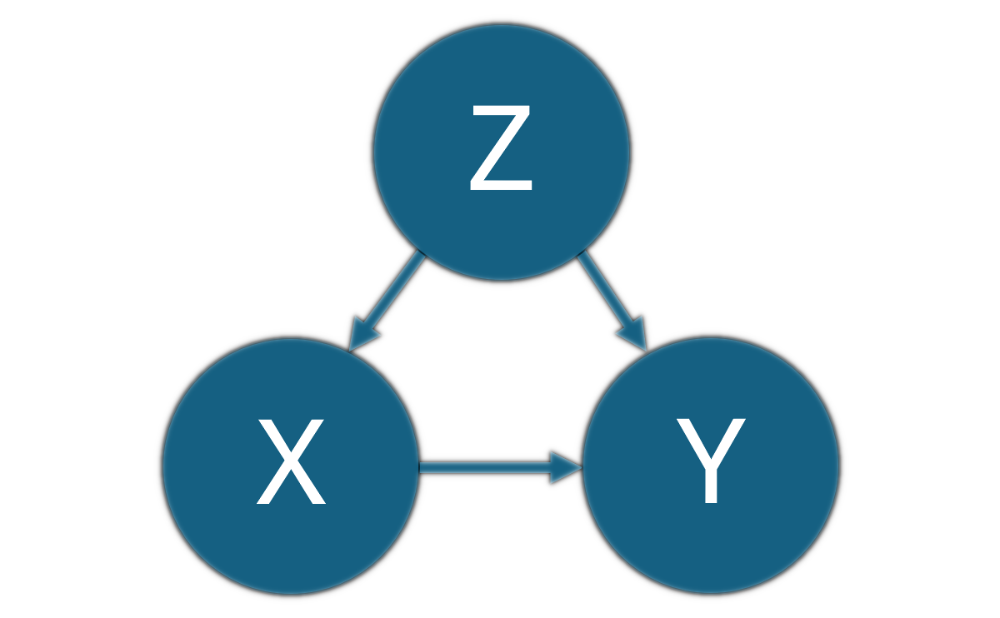

library(dplyr) # for data manipulation
library(ggplot2) # to make plotsImpact Evaluation
A general summary of some consulting work I did for the American Red Cross about estimating the effect of interventions
Intro/Overview
One of the volunteer projects I worked on for the American Red Cross (ARC) was to help develop a cost benefit analysis for one of their programs. The International Federation of the Red Cross and Red Crescent Societies (IFRC) has a nice summary dashboard they maintain with high level information about some of their specific interventions: https://go.ifrc.org/.
One of the programs that IFRC supports is early action or anticipatory action. Unlike a responsive program that would wait for a disaster to occur and then provide aid afterwards, an anticipatory action program aims to provide preventative aid before the disaster occurs. This can be effective for certain types of disasters where we can reasonably predict the event in advance.
For example, we might predict a coming flood using data about river levels, weather, upstream water flow, etc. If we wait until after the flood occurs, the flooding could spread water-borne diseases among the affected population and a relief effort might involve providing medicine or other forms of healthcare. Alternatively, an anticipatory action might be to provide chlorine tablets or other water treatment options before the flood occurs so that water-borne disease does not become prevalent after the flood. If effective, this type of preventative action can allow an organization to help more people with the available budget, since these types of preventative actions are often more cost efficient than treating problems after they become more serious.
Setting Up
Loading Libraries
Generating the Data
I will generate my own fake data to use as an example for explaining some general ideas. Continuing with the flood example, let us say that we want to evaluate the effectiveness of an anticipatory action (intervention) that aimed to reduce healthcare expenditures by providing chlorine tablets immediately prior to a flood event to help reduce the incidence of water-borne disease. Based on the available budget, the treatment can only be provided to part of the affected population. Some time after the event, we survey the affected population to see what their actual healthcare expenditures were. This is the data that we use to evaluate the impact of our program.
# set seed for consistency
set.seed(42)
df = data.frame()
# assume total population of 1000 households
n_households = 1000
# each household has 1-7 individuals
hh_size = sample.int(7, n_households, replace = TRUE)
# generate data for each individual
for(i in 1:n_households){
hh = data.frame(
hh_id = i, # household ID
hh_size = hh_size[i], # household size
age = sample.int(65, hh_size[i], replace=TRUE), # age from 1-65
female = ifelse(runif(hh_size[i]) < 0.5, 1, 0)
)
df = rbind(df, hh)
}
# only 100 households receive the treatment
# and treatment is not purely random
# households that are larger, have more young or elderly,
# or are more female are given some preference
treatment_select = df %>%
group_by(hh_id, hh_size) %>%
summarise(pct_young_old = mean((age <= 12) | (age >= 50)),
pct_F = mean(female)) %>%
mutate(treatment_prob = hh_size + 2*pct_young_old + 2*pct_F)
hh_id_treatment = sample(treatment_select$hh_id, 100,
prob = treatment_select$treatment_prob)
df$treatment = ifelse(df$hh_id %in% hh_id_treatment, 1, 0)
# simulate actual healthcare costs
# hh_size increases costs because of increased exposure opportunity
# age young or old increases costs due to weaker immune systems
# treatment is effective and reduces costs
df$hc_cost = 50 + 5*df$hh_size + 20*((df$age <= 12) | (df$age >= 50)) - 20*df$treatment
# add cluster error and individual error
df_cluster_error = data.frame(hh_id = 1:n_households,
e_household = rnorm(n_households, sd = 5))
df = df %>%
inner_join(df_cluster_error, by = "hh_id") %>%
mutate(e_individual = rnorm(nrow(df), sd = 5)) %>%
mutate(hc_cost = hc_cost + e_household + e_individual)Average Treatment Effect
The metric we want to estimate is the average treatment effect (ATE). The ATE is the expected effect of the treatment on the target outcome. In our example, this would be the dollar amount by which the treatment reduces healthcare expenses for each individual, on average. Estimating this impact is important for evaluating an intervention because it tells us how effective the intervention was at achieving the desired outcome, and hopefully can be generalized to other events and inform decisions about whether to use this same intervention in future scenarios.
Basic Calculation
The definition for ATE is the average difference in outcomes for treated vs non-treated individuals. More formally:
\[ ATE = E[y_1 - y_0] \] Or, writing this in terms of an estimate from a sample:
\[ \widehat{ATE} = \frac{1}{N} \sum_i (y_1(i) - y_0(i)) \]
The problem in both of these definitions is that we never observe both \(y_1(i)\) and \(y_0(i)\), because any one individual either receives the treatment or does not, so we cannot observe what happened to that same individual under both scenarios. So instead, the practical solution is to examine the difference in means between the treated and untreated groups, which should be a good estimate of the ATE under certain assumptions.
\[ E[Y|X = 1] - E[Y|X = 0] \]
# calculate simplest ATE by hand
EY1 = mean(df$hc_cost[df$treatment == 1])
EY0 = mean(df$hc_cost[df$treatment == 0])
ATE = EY1 - EY0
ATE[1] -16.81879Linear Regression
A simple regression yields the same estimate for the ATE, since using a binary indicator for the treatment is effectively the same as just taking the mean for each group. This is a useful approach if you want to do anything beyond getting this single point estimate.
# estimate via simple linear model
fit = lm(hc_cost ~ treatment, data = df)
summary(fit)
Call:
lm(formula = hc_cost ~ treatment, data = df)
Residuals:
Min 1Q Median 3Q Max
-46.734 -10.373 -0.274 10.843 46.409
Coefficients:
Estimate Std. Error t value Pr(>|t|)
(Intercept) 82.8386 0.2561 323.4 <2e-16 ***
treatment -16.8188 0.7474 -22.5 <2e-16 ***
---
Signif. codes: 0 '***' 0.001 '**' 0.01 '*' 0.05 '.' 0.1 ' ' 1
Residual standard error: 14.98 on 3872 degrees of freedom
Multiple R-squared: 0.1157, Adjusted R-squared: 0.1154
F-statistic: 506.4 on 1 and 3872 DF, p-value: < 2.2e-16# 95% confidence interval for ATE
confint(fit, "treatment", level = 0.95) 2.5 % 97.5 %
treatment -18.28405 -15.35352# same thing using the standard errors directly
coef(fit)[2] + qt(0.025, df=fit$df.residual) * summary(fit)$coefficients[2,2]treatment
-18.28405 coef(fit)[2] + qt(0.975, df=fit$df.residual) * summary(fit)$coefficients[2,2]treatment
-15.35352 The estimated coefficient on the treatment variable is about -17, which matches the manual calculation from earlier. In other words, the estimated ATE is that receiving the treatment reduces healthcare expenditures by an average of $17 per person. However, both of these estimates do not quite match the true effect of -20 which is the effect I used to generate the data, and the 95% confidence interval does not include the true effect either.
Additional Considerations
The simple estimate for ATE above is useful to look at, but there are usually more factors that need to be considered in this type of analysis. These will differ substantially based on the situation. Here we will examine a few that are relevant to this example.
Confounding Factors
A confounding factor is a variable that influences both the dependent variable and independent variable. To estimate the effect of X on Y, we must suppress the effects of confounding variables that influence both X and Y. We say that X and Y are confounded by some other variable Z whenever Z causally influences both X and Y.

In this example, there are variables such as household size and age (Z) which influence both the treatment effect (X) and healthcare expenditures (Y). They influence treatment because treatment was not assigned randomly; the assignment was weighted to prefer larger households and households with young and elderly members. They have a direct effect on healthcare costs based on how those costs were simulated in this example.
We can account for these factors by explicitly estimating their effects in the model. Another way to think about this is that the simple version of the model suffers from omitted variable bias and the previous estimate of the ATE was incorporating effects which were actually attributable to these confounding factors.
# add indicator for young/elderly age group
df$age_young_old = ifelse((df$age <= 12) | (df$age >= 50), 1, 0)
# estimate via simple linear model
fit = lm(hc_cost ~ treatment + hh_size + age_young_old, data = df)
summary(fit)
Call:
lm(formula = hc_cost ~ treatment + hh_size + age_young_old, data = df)
Residuals:
Min 1Q Median 3Q Max
-23.5940 -4.6384 0.0414 4.9515 24.1408
Coefficients:
Estimate Std. Error t value Pr(>|t|)
(Intercept) 49.58349 0.35093 141.29 <2e-16 ***
treatment -19.71544 0.35279 -55.88 <2e-16 ***
hh_size 5.05749 0.06416 78.83 <2e-16 ***
age_young_old 20.12108 0.22854 88.04 <2e-16 ***
---
Signif. codes: 0 '***' 0.001 '**' 0.01 '*' 0.05 '.' 0.1 ' ' 1
Residual standard error: 7.046 on 3870 degrees of freedom
Multiple R-squared: 0.8043, Adjusted R-squared: 0.8042
F-statistic: 5303 on 3 and 3870 DF, p-value: < 2.2e-16# 95% confidence interval for ATE
confint(fit, "treatment", level = 0.95) 2.5 % 97.5 %
treatment -20.40712 -19.02376After adjusting for these confounding factors, our ATE estimate is much closer to the true value and the 95% confidence interval includes the true value.
Inverse Probability Treatment Weights
Another method for addressing this concern around confounding is through the use of propensity scores, or inverse probability treatment weights. This is a popular method for observational studies. Unlike a randomized controlled trial (RCT) where an experiment is designed in advance to have treatment and control groups balanced across other covariates of interest, an observational study has no control over the treatment assignment and will often have treatment and control groups which are not balanced across other covariates. This technique is essentially re-weighting the observational data to make it look more it came from a balanced RCT design, which is important for estimating ATE since the calculation assumes we are comparing similar individuals.
This method starts by building a model to predict a propensity score, which is the probability that the treatment was assigned to an individual. Observations are then re-weighted by dividing by this probability in order to achieve better balance.
# estimate propensity score
fit_ps = glm(treatment ~ hh_size + age_young_old + female, data = df, family = binomial())
ehat = predict(fit_ps, type = "response")
df$ipw = df$treatment/ehat + (1-df$treatment)/(1-ehat)
# estimate ATE using weighted linear model
fit = lm(hc_cost ~ treatment, data = df, weights = ipw)
summary(fit)
Call:
lm(formula = hc_cost ~ treatment, data = df, weights = ipw)
Weighted Residuals:
Min 1Q Median 3Q Max
-128.314 -12.129 -0.438 12.748 85.704
Coefficients:
Estimate Std. Error t value Pr(>|t|)
(Intercept) 83.1895 0.3267 254.60 <2e-16 ***
treatment -18.9913 0.4627 -41.04 <2e-16 ***
---
Signif. codes: 0 '***' 0.001 '**' 0.01 '*' 0.05 '.' 0.1 ' ' 1
Residual standard error: 20.34 on 3872 degrees of freedom
Multiple R-squared: 0.3032, Adjusted R-squared: 0.303
F-statistic: 1684 on 1 and 3872 DF, p-value: < 2.2e-16# 95% confidence interval for ATE
confint(fit, "treatment", level = 0.95) 2.5 % 97.5 %
treatment -19.89851 -18.08407This is an improvement over the un-adjusted estimate, but it doesn’t quite capture the true effect. One additional diagnostic we can examine here is the extent to which this re-weighting improved covariate balance. This is often done by comparing Standardized mean Differences (SMD) for the covariates of interest before and after this re-weighting. A common rule of thumb for achieving balance is a SMD threshold of 0.1, but this is somewhat arbitrary.
# calculate SMD for covariates of interestConclusion
To do